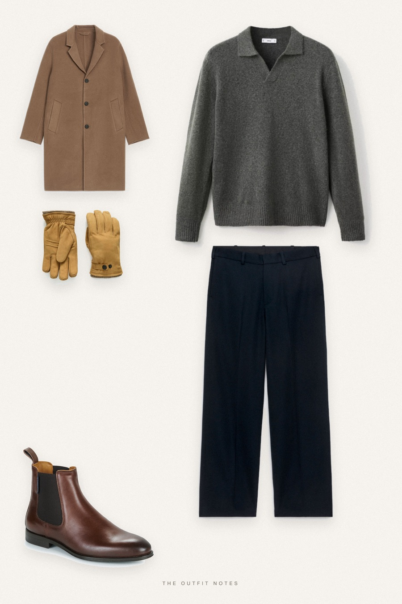
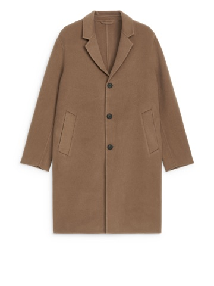
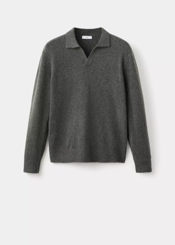
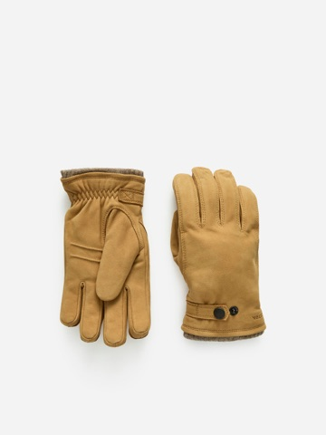

Cold Camel
topcoat weather, nothing loud

Winter outfit men can copy: ARKET relaxed camel wool topcoat over a dark green Mango knit polo, navy loose-fit wool trousers with a clean drape, chestnut Pellet chelsea boots and Hestra nubuck gloves. A warm old money winter look for the city commute, with texture instead of logos.
The pieces
This page contains affiliate links: if you buy through them, we may earn a commission at no extra cost to you. Disclosure.

ARKET
Camel wool topcoat
Shop
Mango
Dark open-collar knit polo
Shop ARKET
ARKET
Navy loose wool trousers
Shop Pellet
Pellet
Chestnut chelsea boots
Shop
ARKET
Camel nubuck gloves
Shop
Prices are indicative, taken when the look was published, and may have changed. Pictures of the outfit are AI-generated illustrations of real products; the product photos are the retailers' own.
Published 1 October 2026.